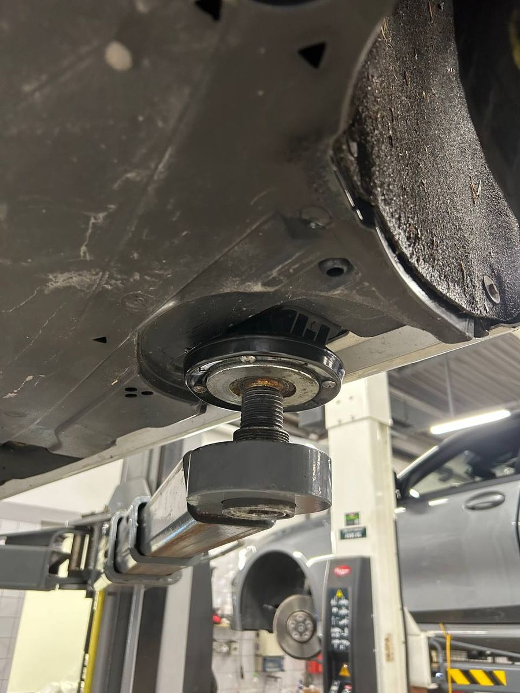

Home / Brakes and suspension
BMW Jack Points: Where to Lift the Car Safely
Quick answer
On a BMW the lifting points are four rectangular black pads under the sill, one near each wheel. Bend down and look under the sill and you will see them. Always lift on these points, use jack stands for any work under the car, and never jack on other parts of the underbody. Hybrid and electric models have a battery pack under the floor, so follow the manual for them.

Where the jack points are
Bend down and look under the sill, the strip of bodywork between the front and rear wheels. You will see four rectangular black pads, one near each wheel. Those are the lifting points. In the workshop, the lift arms are placed on them.
How to lift the car
- Park on firm, level ground, switch off the engine, apply the parking brake and put the car in Park or in gear.
- Find the pad nearest the wheel you want to lift.
- Place the jack or lift pad squarely under the pad, so the load sits on it and not on the plastic sill cover.
- Raise the car slowly, and stop to check that the contact is still correct.
- Put jack stands under the car before you work under it.
- Lower the car the same way, slowly.
Safety note. Never work under a car held only by a jack. Use jack stands on solid ground. Hybrid and electric models carry a battery pack under the floor, so use only the points and the procedure shown in the manual.
Common mistakes
- Jacking on the sill edge or on other parts of the underbody
- Placing the jack off-center, so the load sits on the plastic cover
- Lifting on soft or sloping ground
- Using a jack without jack stands
- Raising the car quickly, so it shifts
Why it matters
Lifting on the wrong place can bend the sill or damage the body. For jobs that need the wheels off, such as the ones in BMW Brake Pad Wear and BMW Front Suspension, a safe lift is the first step.
FAQ
Where are the jack points on a BMW?
There are four rectangular black pads under the sill, one near each wheel. You can see them if you bend down and look.
Can I jack the car at any point under the body?
No. Use the lifting points, and check your manual for your model.
Do I need jack stands?
Yes, for any work under the car. Never rely on a jack alone.
Are the jack points the same on every BMW?
They look very similar on most BMWs, but check your manual, especially on hybrid and electric models.
Can I lift the car from the front or rear center?
Only if your manual shows a point there. Otherwise, use the pads under the sill.
This guide is general information based on personal experience, not professional advice. Check your own car's manual for exact specs and read the disclaimer before starting any job.